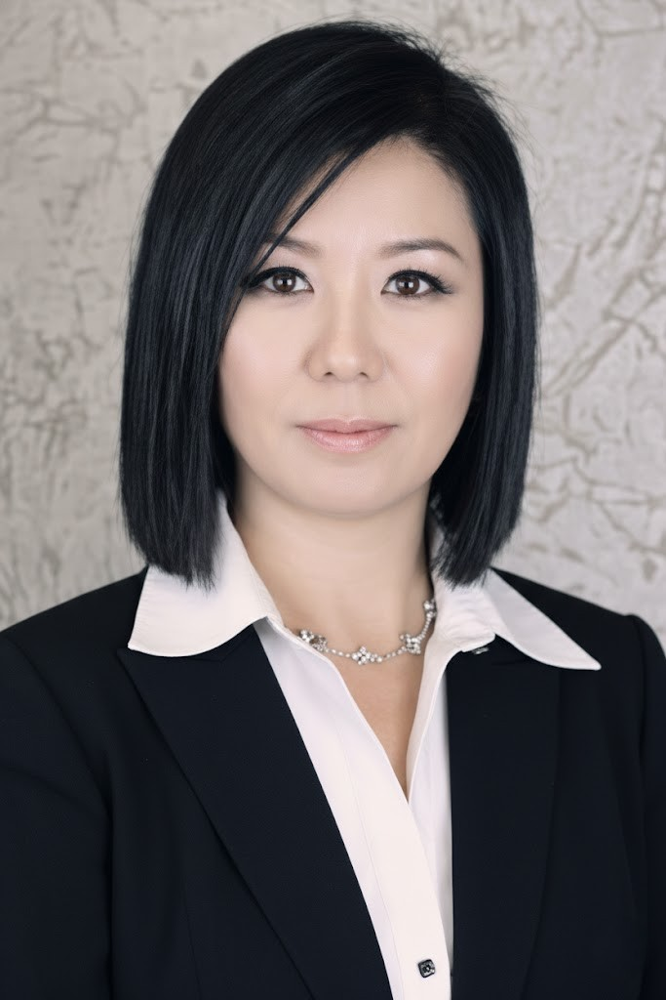
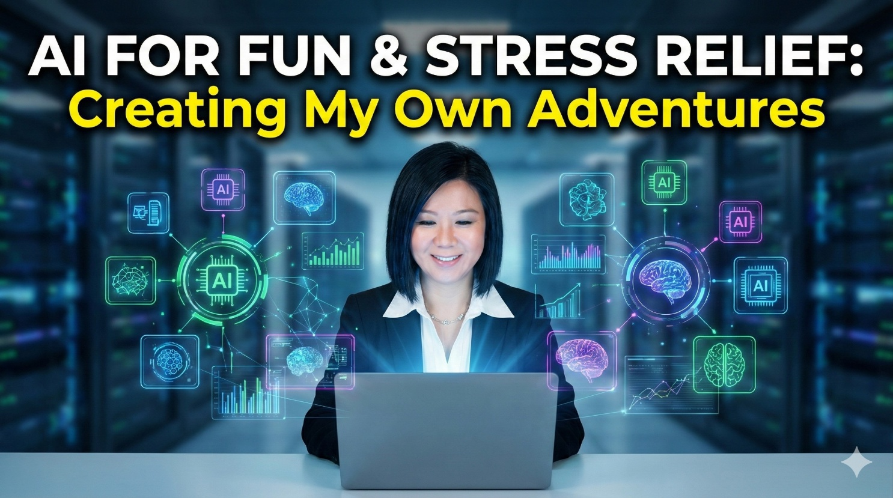

Architecting health benefits solutions at the intersection of global complexity, institutional trust, and intelligent innovation — for the organizations and people that depend on getting it right.

Healthcare is about connecting people, not just systems — and the leaders who understand that distinction are the ones who transform it.
My career has always been about making the complex feel navigable. Whether I'm guiding a multinational employer group through the architecture of a global benefits program, orchestrating alignment across international TPA partners, or reimagining how AI can eliminate friction in client workflows — I bring the same orientation to every challenge: strategic clarity, institutional fluency, and a genuine commitment to the people on the other side of the equation.
What distinguishes my practice isn't simply the depth of healthcare expertise accumulated over nearly 15 years. It's the conviction that the industry's most meaningful advances will come from professionals who are willing to evolve alongside it — and who bring the tools of tomorrow into the work of today.
Innovation in practice: I designed and deployed custom AI agents within the Microsoft 365 environment to automate and elevate client support workflows — transforming manual, high-friction coordination processes into intelligent, scalable systems. This initiative is not peripheral to my professional identity. It reflects a core belief: that the most effective benefits strategists of the next decade will be those who build with AI, not alongside it.
Southern California
Multinational & National Account Benefits Strategy
AI innovation, narrative storytelling, golf
Senior consulting & strategic advisory roles

A storytelling-driven channel featuring Oscar — an anthropomorphic white otter — navigating workplace psychology, healing philosophy, and the quiet complexity of modern professional life. Produced entirely with AI tools including Eleven Labs, Suno, CapCut, and InVideo. Nova Vista is proof that the skills that define a great benefits strategist — empathy, narrative clarity, systems thinking — translate with precision into digital media.
An AI-generated series that reclaims the ordinary — exploring the quiet acts of resilience, connection, and humanity that define professional life, rendered through the lens of a lunch break.
The same design intelligence applied to content creation informs my enterprise AI work — building custom agents that transform high-friction workflows into elegant, scalable systems within Microsoft 365.